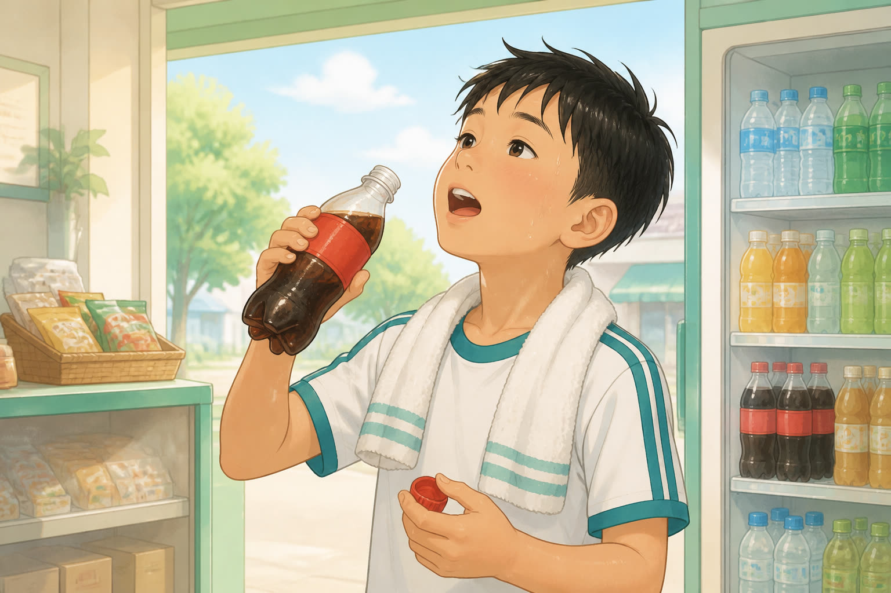
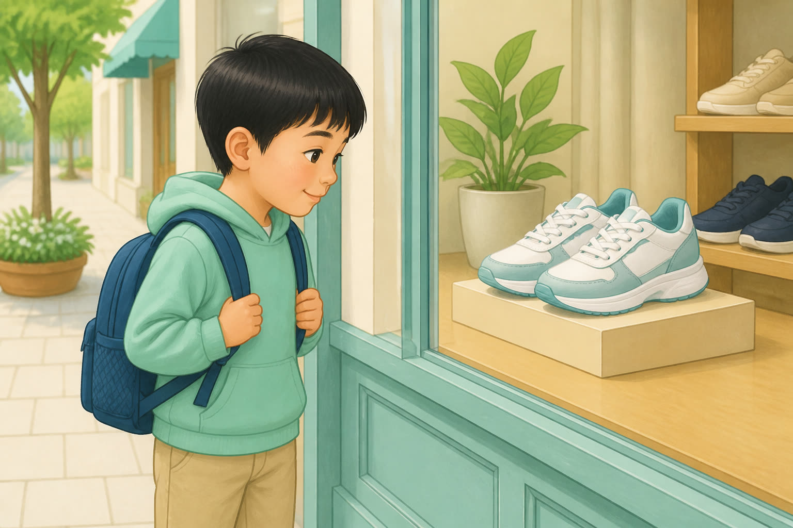

6. The old man feels ______ because his children are away.
A。lonely = 感到寂寞；alone = 独自一人（不一定寂寞）。
7. Don't be ______. Please be serious in class.
A。silly 是形容词。
8. This question is very ______. I can do it.
A。be + 形容词 easy。
9. I can finish the work ______.
B。修饰 finish 用副词 easily。
10. What a ______ girl! She always helps others.
A。lovely 是形容词（不是副词）。
11. The ______ music makes everyone want to dance.
A。lively 是形容词，修饰 music。
12. Please write the answers ______.
B。修饰 write 用副词 quickly。
D. 词形变化与时态（12分）
按括号提示变形：副词、过去式、现在进行时等。
1. She smiles (happy).
答案：happily
2. Please run (quick).
答案：quickly
3. He can answer the question (easy).
答案：easily（y→i + ly）
4. Tom is a schoolbag now. (choose) 现在进行时
答案：choosing
5. Yesterday Lily a pink bag. (choose) 过去式
答案：chose
6. Mum a rule last night. (write) 过去式
答案：wrote
7. They are for clothes now. (shop) 现在进行时
答案：shopping
8. I usually milk in the morning. (drink) 一般现在时
答案：drink
9. Look! Bob is cola now. (drink) 现在进行时
答案：drinking
10. Yesterday the boys too much cola. (drink) 过去式
答案：drank（drink → drank → drunk）
11. She a lot of time on reading. (spend)
答案：spends
12. The shoes me 100 yuan yesterday. (cost) 过去式同形
答案：cost（过去式仍是 cost）
E. 动词 + with 工具搭配（4分）
选择正确的搭配完成句子。
1. Please ______ a pen.
B。write with a pen/pencil 用钢笔/铅笔写字。
2. We ______ a knife to cut the cake.
A。cut with a knife/scissors。
3. Chinese people often ______ chopsticks.
C。eat with a fork/chopsticks。
4. We ______ our eyes.
B。see with your eyes。
F. 词汇表配对（4分）
根据中文意思写出英文（可用词表中的词）。
spendcoston salethirstyafraideasilywrite withlook for
1. （人）花费时间/金钱 →
答案：spend
2. （物）值……钱；花费 →
答案：cost
3. 打折促销 →
答案：on sale
4. 用钢笔/铅笔写字（短语）→
答案：write with
提高 · 24分
语境辨析 · 看图排序
花费动词、look 短语与促销搭配；结合连图排出故事顺序。
A. 单项选择（12分 · 每题 2 分）
1. — How much did you ______ for the new bike? — 300 yuan.
C。pay … for sth.
2. My little sister is ill. I have to ______ her at home.
C。look after 照顾
3. It ______ the workers two years to build this bridge.
B。It took sb. time to do sth.
4. These schoolbags are ______ sale at half price — only 30 yuan each!
A。at half price / only 30 yuan 明确是“打折”，只能用 on sale（不是 for sale）。
5. I ______ two hours doing my homework yesterday.
B。人 + spend + 时间 + doing。
6. How much does the coat ______?
D。物作主语用 cost。
B. 短文填空（8分 · 每空 2 分）
atonchoosespay
Mary wants a gift for her friend. She looks ________ many things in a shop. There is a nice cup ________ sale — 50% off. She ________ the blue one. Then she goes to ________ for it.
(___) One boy is thirsty and drinks cola; another is looking at shoes.
答案：2（对应中间画面）
(___) Mum writes a new family rule with a pen.
答案：3（对应最下面画面）
(___) Mum takes her three boys to shop for clothes.
答案：1（对应最上面画面）
正确故事顺序是：___ → ___ → ___（用句子前编号或 1-2-3 表示）
答案：1-2-3（进商场 → 喝可乐/看鞋 → 写规定）
挑战 · 20分
综合迁移 · 看图造句
答案唯一的语境完形 + 看图用目标词造句。
A. 微型完形（8分 · 每题 2 分）
Lily wants a new schoolbag. She sees many bags (1) ______ sale — half price!
She (2) ______ a pink one. Her mother (3) ______ for it. Then Mum says (4) ______,
“You look great!”
1.
B。half price 表示打折，只能选 on sale；for sale 仅表“待售”，不含半价信息。
2.
C。chooses 挑选
3.
D。pays for
4.
B。happily 修饰 says
B. 看图造句（12分 · 每题 4 分）
观察图片，写一句完整、正确的英语句子。纸质卷写在横线上。
1.

男孩刚运动完，正在喝饮料。
参考：The boy is thirsty, so he drinks cola. / He feels thirsty after sports.
2.

男孩站在橱窗前，看着展示的鞋。
参考：The boy is looking at the shoes in the shop window.